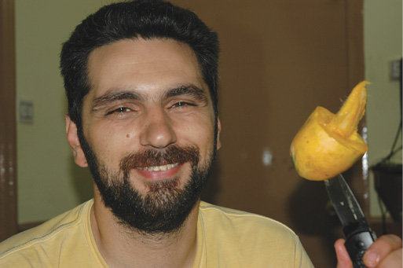
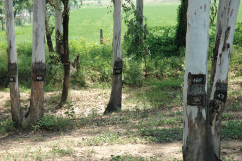
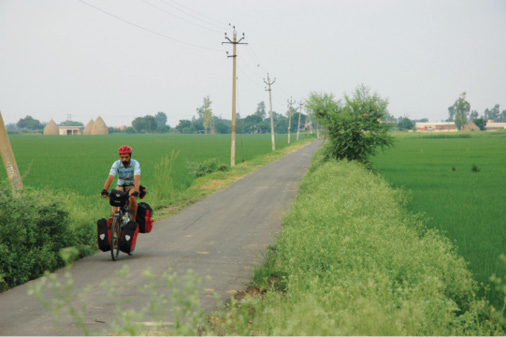

HİNDİSTAN, 4 Ağustos
Bu yolculukta ziyaret edeceğimiz ülkelere dair bazı manzaralar vardı aklımızda. Bugün dejavu yaşadık. Tam hayal ettiğimiz gibi; hafif engebeli bir köy yolu, önde geniş bir ova, çok uzakta tepe sayılamayacak birkaç yükselti, gözünün alabildiği alanda onlarca küçük gölet ve sağa sola serpiştirilmiş çatısız kerpiç evler. İşte aklımdaki Hindistan böyle bir şeydi. Sınırdan geçerken çeltik tarlalarıyla dolu Hindistan’a ulaştığımıza zaten çok sevinmiştik. Ama bu anı yaşayınca Hindistan’da olduğumuz gerçeği tam olarak içselleşti. Hindistan belki de dünyanın en büyük alüvyon ovalarına sahip. Himalayalar’dan gelen nehirler hâlâ Hint Okyanusu’nu doldurmaya devam ediyor. Bu düzlükler muson dönemlerinde suyla kaplanıyor. Muson mevsiminde buradayız. Bazen kilometrelerce yanında sürdüğümüz sulak alanların ortasındaki yapılar, elektrik direkleri, oradan bir zamanlar yol geçtiğine işaret eden yol tabelaları, buraların sel alanları olduğunu gösteriyor bize.
Belki de birkaç gün önce insanların acısı haline gelen sel, şimdi bizim için farklı bir anlam kazanıyor. Burada üzülmüyor değilim elbette ama doğanın gücünü hissetmek beni her zaman garip etkilemiştir.

Pakistan, Rawalpindi
Mango gören masum bisikletli.
Nasıl Himalayalar kendiliğinden yükseldiyse, nasıl Hint Okyanusu’ndan esen rüzgâr dağlara doğru nem taşıyarak muson yağmurlarını oluşturuyorsa, nehirler de Güney Asya’yı suya doyuruyor vakti zamanı geldiğinde. Dünyanın en çok yağış alan yeri olan Çerapunçi, 12.000 mm yağış alıyor. Konya Karapınar’da 200 mm olduğunu, çok yağmurlu Rize’de bile 2000 mm’ye ulaştığını getiriyorum aklıma. Vay be dememek elde değil. İşte musonun gücü. Bu güce saygı duyuyorum. Selin sonuçlarını ortadan kaldıramasa bile zararlarını azaltacak teknolojinin de bir gün Hindistan’da olmasını diliyorum.
Peki, bu kadar su yeryüzüne inince ne oluyor? Tabii ki her yer yemyeşil. Pakistan’dan sonra çok iyi geliyor bu. Bugün fark ettiğimiz numaralandırılmış ağaçlar yol boyunca devam ediyordu. Kavağa benzer bir tür sanıyorum. Yol kenarında su birikmesini engellemek için dikilmiş herhalde diye düşündük İnci’yle. Uzun süre bu kavak benzeri ağaçların yanında sürdükçe sürdük.
İnsanın en temel ve en eski besin kaynakları diye saysak buğday ve pirinç başta gelmez mi? Buralara can veren muson bu sefer buğday yetişmesini engelliyor elbette. Çünkü buğdayın kuruması için gerekli ortam sel bölgelerinde oluşmuyor. Bu sebeple bu coğrafyada pirinç tarlaları daha fazla. Gerçekten de Hindistan’ın milli yemeği “dal” bir çeşit mercimek çorbası, onun kadar ünlü olan “bhat” ise pirinç lapası.
Bunları afiyetle ve bolca tüketmeye devam ediyoruz. İçine bol miktarda Hind yufkası diyebileceğimiz “Çapati” doğruyorum. Çapati ile sumak dahi yapıyorum. Kaşık yerine sumak yaparak, kenarlarından döke döke çorba içmek gibi zevkleri olan basit bir adamım ben. Et ve et ürünleri ile aramız hiçbir zaman çok iyi olmadı. Çorbanın kokusu, lezzeti belki Türkiye’dekine çok yakın değil fakat, üzerinde tüten dumanı dahi bize evi hatırlatıyor.
Fotoğraf makinesinin küçücük ekranında bile güzel görünen manzaraya bir kez daha bakıyoruz. Bilgisayara aktarılmamış ufak haliyle bile “Heyt be, evet biz Hindistan’daydık” dedirten o hayalimizdeki fotoğrafı çektiğimi görüyoruz.
Bakalım evde fotoğrafa bakınca hatıramızdaki Hindistan yeniden canlanacak mı?
Bir başka dejavu yaşayacak mıyız?
Bu arada yine “dal” çekti canım.

Hindistan, Ludhiana
Kimlik numaralı ağaçlar.

Hindistan, Panipat
“Neresi sıla bize, neresi gurbet, yollar bize memleket.” Murathan Mungan.